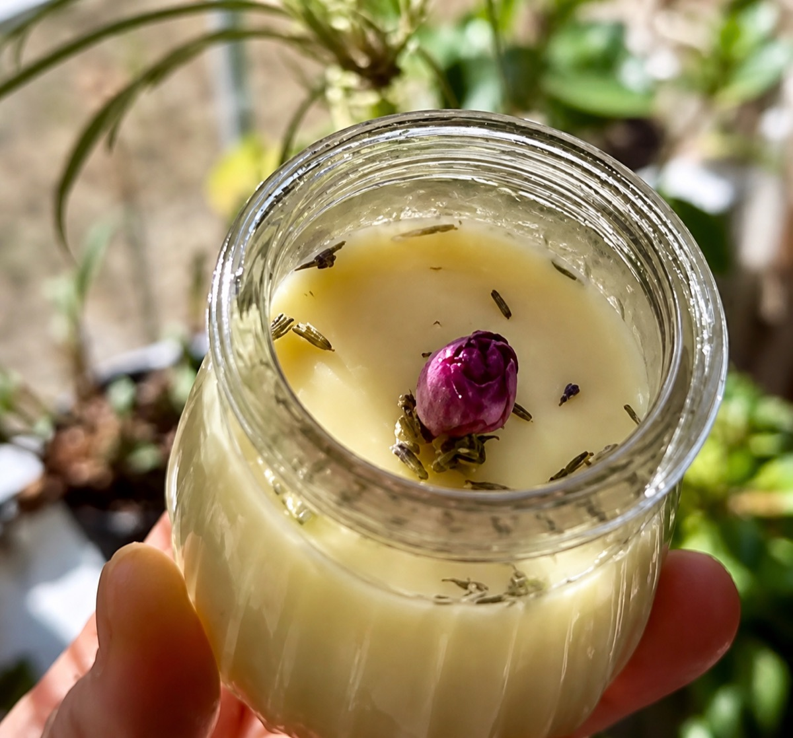
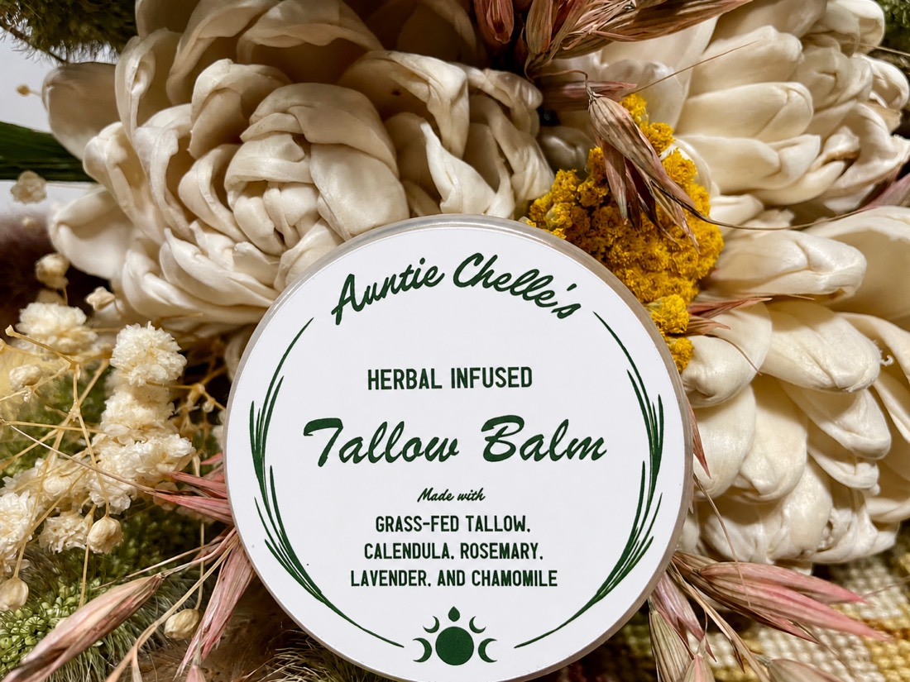
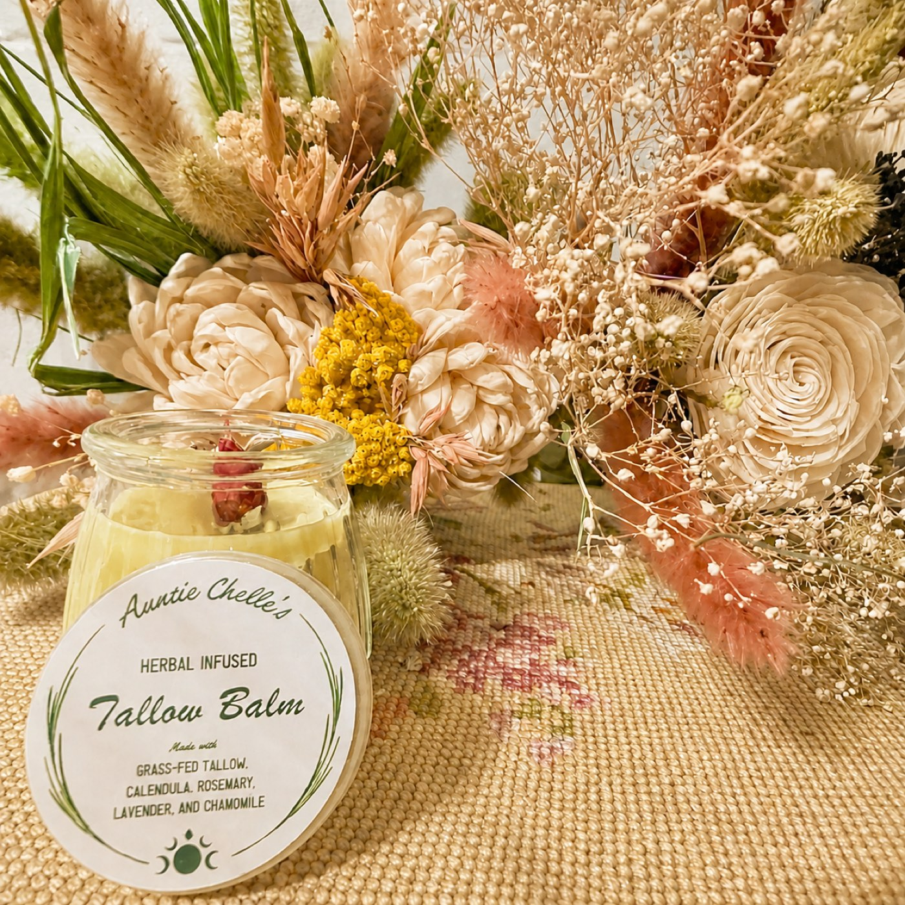

Back to the shop
Herbal infused
Tallow Balm
$40Grass-fed beef tallow, rendered on my own stove for a full twenty-four hours and infused with calendula, rosemary, lavender and chamomile. Five ingredients. Nothing in it you couldn’t name, and nothing in it I wouldn’t hand to a friend.
- Grass-fed tallow
- Calendula
- Rosemary
- Lavender
- Chamomile
Checkout is handled by Square. You’ll finish on their page.
- Rendered, infused and jarred by hand at my kitchen table
- Poured thirty jars at a time — as much as fits on auntie’s stove
- Ships from Asheville, NC · local pickup and delivery available
- Naturally shelf stable — there’s no water in it, so there’s nothing to spoil